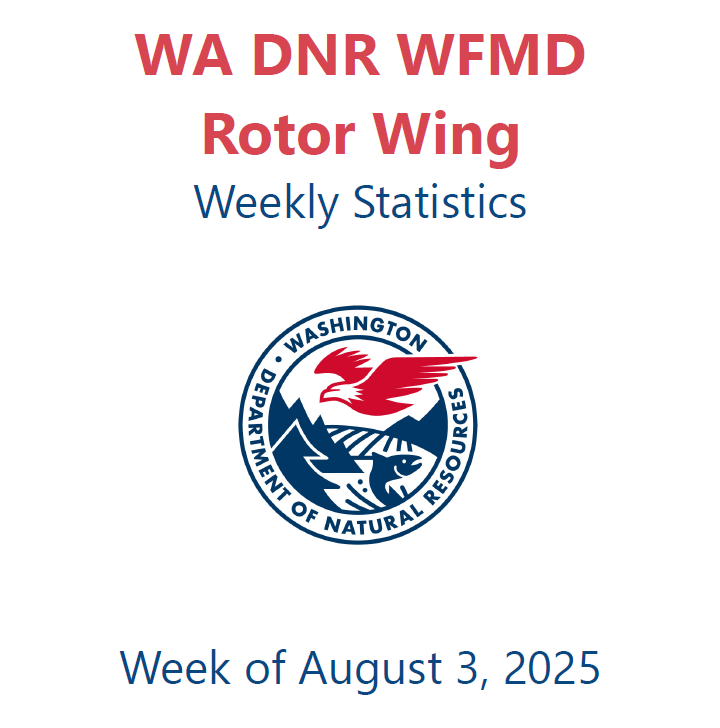

Work
Select a category to view projects.
Master of Science - Geospatial Technologies - University of Washington, Tacoma
Mission Sensor Program Specialist - Washington State Department of Natural Resources
Select a category to view projects.
Large-scale reference map supporting DNR UAS operations; includes DNR lands, regional offices, highways, airports, population centers, and LAANC UAS authorization areas.
View MapSelected operational map products produced while on fire assignments. Occasionally updated.
Open Gallery
Mobile-friendly web GIS highlighting seasonally sensitive wildlife habitat.
Research PaperThis manual is designed to assist field personnel in correctly assigning land management agency jurisdiction to aviation assets operating on wildland fire incidents. Accurate jurisdictional assignment is essential, as it directly supports the production of reliable aviation statistics for the fire season. Proper attribution ensures that data used for planning, reporting, and decision-making reflects true agency involvement and resource commitment.
View ManualData management process write-ups: WA DNR Aviation Cost Tracking applications, post-mission file management for Kodiak MMA platforms, daily mission data prep procedures, MMA platform data sharing via Box, and more. (purpose → responsibilities → workflow → outputs)

Exploring prominence and the 20 most prominent peaks in Washington.
Open
Examples of the weekly reports I produce for Fire & Aviation leadership.
Weekly Fixed Wing Stats Year-to-Date Fixed Wing Stats Weekly Rotor Wing Stats Year-to-Date Rotor Wing StatsEnd-to-end process write-ups (collection → processing → analysis → delivery).

My name is Joshua Serfass, and I currently serve as the Mission Sensor Program Specialist (Photogrammetrist 3) for the Washington State Department of Natural Resources (DNR) in the Wildfire Division – Aviation Section. I lead a team of two Mission Sensor Operators, and together we are responsible for collecting aerial intelligence during wildland fire missions and other ad-hoc assignments. Our work includes providing RGB, MWIR, and SWIR imagery and video products, as well as generating spatial data outputs such as fire perimeters, hot spot locations, and other critical points of interest.
In addition to my primary role, I serve as a Geographic Information Systems Specialist (GISS) on a Type 2 Wildfire Incident Management Team. I am also a qualified Part 107 UAS pilot, with open NWCG UAS-P (Pilot) and UAS-D (Data Specialist) task books.
My academic background includes an M.S. in Geospatial Technologies and a GIS Certificate from the University of Washington – Tacoma, along with Natural Resource Management coursework from Oregon State University. I also hold a B.S. in Accounting from King's College in Pennsylvania.
I am passionate about applying my analytical skills to natural resource challenges — particularly in forestry, wildfire, disaster response, and wildlife management. Looking ahead, I aspire to advance further into GIS data management and application development to continue supporting environmental and emergency response missions.
resume